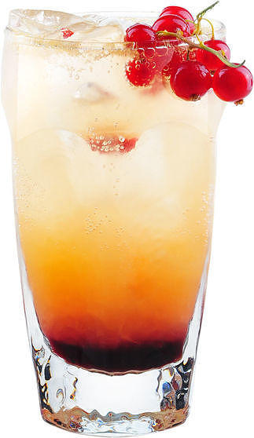

Летний физз

Вспомните свои школьные годы… Каждые летние каникулы вы отправлялись к бабушке в деревню, а там вас ждали ОНИ. Кусты, полные смородины, которую приходилось собирать в поте лица. Зато потом сколько было радости наполнить тарелку красной и черной ягодой и насладиться результатами своего труда. Самый ностальгический коктейль по мотивам детства.